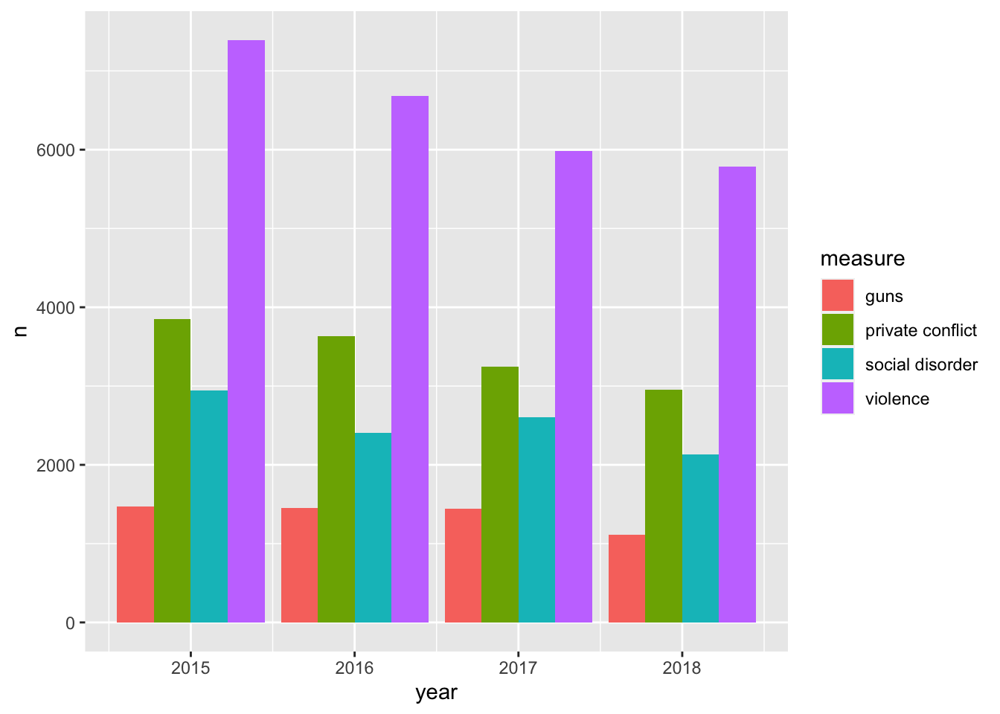

Chapter 22 Visualizing beyond 2-dimensions
Over the duration of the last three chapters we have cultivated a fundamental understanding of the grammar of graphics and have discussed how to craft univariate visualizations and explore bivariate relationships. In those graphics we have not gone beyond two-dimensions. We only utilized two aesthetics to map. Howver, there is many more that we can incorporate into our visualizations which will in turn enable us to explore three or for variables at once.
Note that these will not be 3D, but rather visualize three variables.
To improve our graphics we will utilize the color, shape, and size aesthetics, as well as faceting. Of course, this begs the question of which aesthetic do I choose? Well, that depends upon what type of data you will be visualizing. Each aesthetic serves different purposes and can be used for a different type of variable.
In general we can use the below mappings:
- color -> continuous or discrete
- shape -> discrete
- size -> continuous
22.1 Color
Let us first take a look at the use of color. Color is, after position, the easiest visual cue for we humans to distinguish (that viz book on my coffee table) between. It is also a rather versatile visual cue as it can be used to address both continuous and discrete variables. We will first explore the use of color for discrete measurements. In this context, I do not necessarily mean discrete as in integers, but more or less groups. This is where there is not necessarily an order or scale implied in the data. It can however be indicative of order—think for example age groups. To explore the use of color for groups or discrete data, we will look at Boston ecometrics of social disorder as discussed previously (O’Brien 2015 CITE NEEDED). Ecometrics are stored in a file called ecometrics.csv the data directory. Read it in as ecometrics.
At this point in your learning, I think it is appropriate to introduce you to a new package that can be used to quickly summarize and visualize your data. That is called skimr. Within the package there is a function called skim(). This package is really useful for quickly getting an understanding of a dataset as it provides useful summary statistics for each variable as well as a histogram for numeric columns.
#> ── Data Summary ────────────────────────
#> Values
#> Name ecometrics
#> Number of rows 68
#> Number of columns 4
#> _______________________
#> Column type frequency:
#> character 2
#> numeric 2
#> ________________________
#> Group variables None
#>
#> ── Variable type: character ────────────────────────────────────────────────────
#> skim_variable n_missing complete_rate min max empty n_unique whitespace
#> 1 type 0 1 5 34 0 15 0
#> 2 measure 0 1 4 16 0 4 0
#>
#> ── Variable type: numeric ──────────────────────────────────────────────────────
#> skim_variable n_missing complete_rate mean sd p0 p25 p50 p75
#> 1 year 0 1 2016. 1.13 2015 2016. 2016. 2017.
#> 2 n 0 1 1929. 1857. 68 786 1230 2690.
#> p100 hist
#> 1 2018 ▇▇▁▇▇
#> 2 7392 ▇▂▁▁▁A simple graphic here would be to evaluate the raw counts by year. A simple bar chart would look like this.
But, we are aware that there are different measurements. These were described previously and can be seen below.
distinct(ecometrics, measure)
#> # A tibble: 4 x 1
#> measure
#> <chr>
#> 1 violence
#> 2 guns
#> 3 private conflict
#> 4 social disorderHow can we partition our visualization to illustrate the number of counts per ecometric per year? We can use color—each measurement will receive it’s own color. This will make it easier to determine the frequency of which each ecometric occurs. To do this we setting fill rather than color this is because we are working with a polygon shape. color is used in working with lines and points. A useful trick is to think of color as the border and fill as the body fill.
By mapping the fill to the measure variable we were able to create a stacked bar chart! It is apparent that violence is the most frequent of these ecometrics, followed by private conflict, social disorder, and then guns.
One of the downsides about the stacked barchart is that it is difficult to compare the sizes of each group relative to ones that are not adjacent. For example comparing guns to social disorder is made difficult as private conflict is situated between them. We can adjust our chart so that each bar is situated next to eachother. We do this by setting the argument position = "dodge" within the geom_col() layer.

The dodged bar chart makes it much easier to compare the heights of each bar. But now we are creating a somewhat cluttered graphic. In the situation where there are multiple groups and subgroups, it is often preferred to utilize facetting because the most important thing in any graphic is how easy it is to consume. We would rather make four plots than one messy plot.
Let’s facet by measure and tell facet_wrap() to create only one row.

This is awesome! We have four different plots one for each measurement and it is extremely easy to see how each ecoemtrics has trended over the four year period. It seems like there has been a steady decrease! With this plot, however, we are labeling the ecometrics twice: once with the panel label and once with the legend. Since each facet is labeled individually and are not situated next to any other ecometrics, the color becomes redundant. Unless there is an important reason to visualize the color when faceting, it is most likely not needed. As such, a final visualization would look like below.

22.1.1 Continuous color scales
In the cases where our variable of interest is a continuous numeric one, we ought to be using a continuous color scale. These are scales that change from one color to another to illustrate a range of values—for example we could use this to visualize probabilities from 0 - 1. The below is an example of one of these color palettes.
Often you’ll encounter visualizations that use a rainbow color palette or some other number of colors. To illustrate a range of values. This is not recommended. When we are looking at color, we are best able to detect changes in the luminescence (perceived brightness) and saturation.27 As such, we should work with color palettes that are easiest to interpret. First we’ll visualize what changing saturation and brightness looks like.
Below is is an image of 10 colors. Starting at the left is the color yellow (hex code #FFFF00FF). Each step it is desaturated by 10 percent ending with the color grey (hex code #808080FF). We can think of saturation as how much color there is.
 Below is an example of what changing the brightness can look like.
Below is an example of what changing the brightness can look like.
 If we put all of these together we can get something that looks like the below.
If we put all of these together we can get something that looks like the below.

You may find that in the course of your work that individuals will use a color palette like the below.

I strongly advise against this. These colors make it extremely difficult to tell changing values. Consider for a moment how you would try and tell the difference in numeric value between a magenta and a maroon. It would be rather difficult. Moreover, this color palette is not very accessible to those who are color deficient. The below is an approximation of what those with varying types of color blindness might see.
Compare this with the earlier example of dark to light yellows.

This is much more accessible to those who are color deficient as well as providing a clearer understanding of a range of values.
22.1.1.1 Example
To explore this in R, we will return to the commute data set we created from BARI’s Census Indicators very early on. We will visualize the relationship of commuting by automobile and median household income. Moreover, we will color each point by the rate of Bachelor’s degree attainment. As educational attainment tends to increase with income, we should expect the coloring to somewhat follow household income.
Create the visualization following the below steps.
- Read in
data/gba_commute.csv - Plot
med_house_incomeagainst (on the y axis)by_auto - Color the plot by
bach - Add the appropriate geometry
commute <- read_csv("data/gba_commute.csv")
(p <- ggplot(commute, aes(by_auto, med_house_income, color = bach)) +
geom_point())
Wonderful! As anticipated, the color of the points are darkest at the bottom where median household income is the lowest. And as income increases, so does the brightness and saturation of our color scale. If we return to the grammar of graphics, we can take further control of the scales. In this case, the color of the scales. One of the ways we can change the color scale is to add the layer scale_color_gradient() to manually choose what colors to use in our scale. This provides a lot of flexibility to you as a information designer. Think of how you can use the color to represent what it is thatyou are visualizing. Or, how you can use colors to adhere to a color palette of your own or an organization you are working with.
scale_color_gradient() allows us to provide the colors for low values and high values. In general, you should choose a darker color to represent lower values and brighter colors for higher values. Below we add the layer and provide color codes.
You can find color codes via google by searching “color picker.” Or, you can use any number of free color palette generators online. I am personally a fan of coolors.co.
Below we’ve changed the plot to transition from a dark red to a white as values increase.

Try modifying the above plot by picking two colors that you think do a good job of visualizing a range of values.
22.1.1.2 Diverging colors
There are many a time when our variable of interest has a middle value and illustrating the center as well as the deviation from that center is important. To visually represent this we use what is called a diverging color scale. Diverging color scales are characterized by a middle color from which both ends of the spectrum originate. The center is to represent some middle value. If we contextualize this as z-scores and the color palette below, the center would be 0 and any negative scores would trend towards red. Whereas if they trended positive they would become more blue.

One thing to be wary of is using a divergent color scale when it is not necessary. This is an easy trap to fall into since they’re pretty cool. Remember, only use diverging color palettes if there is an existing middle value.
22.1.1.3 Example
Take our ecometrics again. Say we are interested in what the annual deviation is from the sample mean—the average for all years—of each ecometric. This is the perfect use case for a diverging color scale. This will require a bit of computational creativity. So lets work through this.
Let’s think about each of the measures we need to calculate. We need to:
- Find the number of counts for each year by ecometric.
- Find the average count for all years for each ecometric.
- Identify the deviation from the mean.
We will work through this sequentially. First and foremost we need to calculate the total number of crime reports by ecometric by year. The dataset has more than one observation per year per ecometric. We can see this by running a quick count.
count(ecometrics, measure, year)
#> # A tibble: 16 x 3
#> measure year n
#> <chr> <dbl> <int>
#> 1 guns 2015 5
#> 2 guns 2016 5
#> 3 guns 2017 5
#> 4 guns 2018 5
#> 5 private conflict 2015 4
#> 6 private conflict 2016 4
#> 7 private conflict 2017 4
#> 8 private conflict 2018 4
#> 9 social disorder 2015 3
#> 10 social disorder 2016 3
#> 11 social disorder 2017 3
#> 12 social disorder 2018 3
#> 13 violence 2015 5
#> 14 violence 2016 5
#> 15 violence 2017 5
#> 16 violence 2018 5We need to tidy this up and ensure that each row is only one observation—in this case one ecometric per year—with the total count. The logic to accomplish this is to first group_by() both measure and year and then sum the n values. As such:
ecometrics %>%
group_by(measure, year) %>%
summarise(n = sum(n))
#> # A tibble: 16 x 3
#> # Groups: measure [4]
#> measure year n
#> <chr> <dbl> <dbl>
#> 1 guns 2015 3146
#> 2 guns 2016 3111
#> 3 guns 2017 3190
#> 4 guns 2018 2585
#> 5 private conflict 2015 8063
#> 6 private conflict 2016 7807
#> 7 private conflict 2017 7410
#> 8 private conflict 2018 6592
#> 9 social disorder 2015 5043
#> 10 social disorder 2016 4707
#> 11 social disorder 2017 4876
#> 12 social disorder 2018 4168
#> 13 violence 2015 18621
#> 14 violence 2016 18080
#> 15 violence 2017 17172
#> 16 violence 2018 16630One of the dplyr quirks is that after you summarise(), one level of grouping is removed. This is because we have already performed our aggregate measure and the last level of grouping is now unit of analysis (a row). Since we are currently grouped at the measure level and each row represent one year we are already ready to calculate the average n value by group. Rather than using summarise() as we are used to doing with summary statistics, we will use mutate() and create a column called avg with the average n value for each group. This is because we want to be able to perform a column-wise operation to subtract the average from each row’s n value.
I continue by creating three new columns. The first is avg which is set to the mean of n by group. Since the resulting value of mean(n) is a single value, each observation in the group gets that value. Second, I create a new column called deviation which subtracts the new column we created from the n column. The lastly I created a new column to contain the name of the ecometric as well as the year. This is done to ensure that in the visualization each row can be plotted.
annual_metrics <- ecometrics %>%
# group by measure and year
group_by(measure, year) %>%
# find the total n for each measure and year
# summarise loses the last level of grouping
summarise(n = sum(n)) %>%
mutate(
# calculate average `n` by ecometric
avg = mean(n),
# calculate the deviation from the mean
deviation = n - avg,
# creating a new column that combines the name of the ecometric and the year
name = glue::glue("{measure}: {year}"),
) I snuck in a new package right there. glue is a package that let’s us incorporate R expressions with plain text. Whatever is inside of the brackets { will be run as an R expression. So since I referenced the columns measure and year as "{measure}: {year}" each value of name will look something like social disorder: 2017.
Now that we have a data frame with all of the values we want to plot, let’s go ahead and do that! We will use a lollipop chart here to do so.
Remember that
geom_lollipop()comes from theggaltpackage. We can use the function without loading the whole package by referencing thepkgname::function_name().
Within the chart we map devation to the color aesthetic.
(p <- ggplot(annual_metrics, aes(y = deviation, x = name, color = deviation)) +
ggalt::geom_lollipop(size = 2) +
coord_flip())
#> Registered S3 methods overwritten by 'ggalt':
#> method from
#> grid.draw.absoluteGrob ggplot2
#> grobHeight.absoluteGrob ggplot2
#> grobWidth.absoluteGrob ggplot2
#> grobX.absoluteGrob ggplot2
#> grobY.absoluteGrob ggplot2 The above graphic doesn’t take into account the middle value of
The above graphic doesn’t take into account the middle value of 0. Because of this, we need to tell ggplot2 that this is a diverging color scale. When we were working with a normal continuous color scale we used scale_color_gradient(). Instead, since we have a middle value, to create the diverging color gradient we use scale_color_gradient2(). This adds two more arguments mid and midpoint. The former is the color of that middle value. The second is what that middle value maps to—defaults to 0, which is fine for our example.
Now if we add the below colors—a red, yellow-ish beige, and a blue—we will have a diverging color scale on the plot!
Information design is a seemingly endless field of which we only touched on a very small amount. The R community has put a lot of work into enabling the use of color for visualization purposes. The above images of color palettes were created with the help of the wonderful packages prismatic and paletteer
To explore color more check out the packages prsimatic and paletteer by Emil Hvitfeld. He
22.2 Shape and Size
We spent a fair amount of time looking at a number of the ways that color can be used. Color can be used to visualize such a wide variety and as such was deserving of such a long section. Here we will briefly look at the other two aesthetics: shape and color.
22.2.1 Shape
Shape is another useful way to visualize groups or categories in our data. In general we should use shape only if color is not an option for us. Variations in shapes can be more difficult to discern—particularly when the number of groups to be visualized reaches beyond ~4. Moreover, shapes, depending on choice and intricacy can become overly distracting and can detract from the visualization as a whole. As a heuristic, do not map both shape and color to the same variable.
To illustrate the use of shape we will use data from Inside Airbnb.28 This dataset contains Airbnb listings for Boston as well. The dataset can be found at data/airbnb/airbnb.csv. We will go into the dataset in more depth in the chapter on spatial analysis.
For this visualization we will read in the dataset, filter it down to just "Back Bay", and then plot ponts based on their place in space—aka latitude and longitude. We will also map shape to the room_type. Doing this will show us the spatial distribution of Airbnbs as well as the different kinds.
Note that while we normally say “latitude and longitude”, that actually is saying “y and x” respectively. So be sure to put the latitude in the y aesthetic position and not longitude.
# read in data
airbnb <- read_csv("data/airbnb/airbnb.csv")
#> Parsed with column specification:
#> cols(
#> id = col_double(),
#> neighborhood = col_character(),
#> room_type = col_character(),
#> price = col_double(),
#> longitude = col_double(),
#> latitude = col_double()
#> )
# filter to backbay
bb <- airbnb %>%
filter(neighborhood == "Back Bay")
# plot the points by shape
ggplot(bb, aes(longitude, latitude, shape = room_type)) +
geom_point(alpha = .5, size = 3) 
By changing each point’s shape by their associated room type we can get a somewhat better idea of the spatial distribution by type.
What can we tell from this visualization? It looks like most Airbnbs are overwhelmingly the entire home or appartment. We can infer from this that most Airbnbs _are not_being used as additional revenue for residents. But rather that each Airbnb might be a unit of housing that is no longer available to Boston residents. Could this be increasing demand for housing? Is the rise in Airbnbs creating a shortage of housing and can it be one of the factors behind the rising Boston rents?
The above visualization is good, but lets compare that with the use of color.
Which do you prefer? Which do you feel does a better job getting this message across? Again, we are delving into the world of design and there is never a correct answer. But sometimes there may be a consensus. So just do your best and ask others for their thoughts on your visualizations.
22.2.2 Size
Moving onto size. Size is an aesthetic that is one of the hardest for humans to properly distinguish between. Because of this, size should usually be used when comparing observations with large discrepancies between them. Doing this with ggplot is again rather straight forward as here the only difference is, is that we set the aesthetic size to some other column (this must be numeric).
This visualization will use data from Analyze Boston’s legacy database. Analyze Boston has previously released all signals from their Big Belly trashcans for the year of 201429. In the words of the data dictionary:
Bigbelly’s contain compactors which crush waste within their waste bins in order to reduce the volume required to store the waste deposited into the Bigbelly. The compactors are able provide an average compaction ratio of 5:1, meaning a Bigbelly can store the equivalent of 150G (gallons) of uncompactedwaste within a standard 30G waste bin. The compactor in a Bigbelly will run when it has detected that waste within the bin has reached a certain level. After a compaction cycle the waste will be crushed to occupy a smaller amount of space within the waste bin. These cycles are repeated as more waste is added to the Bigbelly. After approximately 150G of uncompacted waste has been added to the Bigbelly the compactor will not be able to compress the waste further, this condition is detected and thewaste bin is considered to be full.
For the sake of example, I have created an aggregate count of signals from all Big Belly receptacles for 2014. This file can be found at data/downtown-big-belly.csv.
big_belly <- read_csv("data/downtown-big-belly.csv")
glimpse(big_belly)
#> Rows: 147
#> Columns: 4
#> $ description <chr> "1 North Market Street (in front of McCormick & Schmicks…
#> $ n <dbl> 47, 179, 257, 108, 171, 93, 27, 173, 55, 64, 126, 190, 19…
#> $ lat <dbl> 42.36034, 42.35653, 42.35634, 42.35557, 42.35520, 42.3545…
#> $ long <dbl> -71.05582, -71.06190, -71.06203, -71.06288, -71.06321, -7…Similar to the Airbnb data, we will visualize by latitude and longitude (lat and long respectively) while mapping the size aesthetic to n.

(https://flowingdata.com/2008/04/29/why-should-engineers-and-scientists-care-about-color-and-design/): Why should engineers and scientists care about color and design? Flowing Data.↩︎